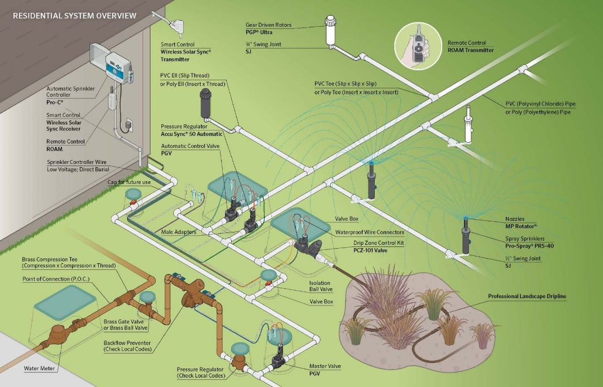

🌿 Smart IoT Irrigation System
Overall Product Summary
The Smart IoT Irrigation System are smart farming systems that combine cutting-edge IoT sensors, automation, and solar power to revolutionize modern agriculture. Designed to optimize water use and improve productivity, these kits — Basic, Standard, and Advanced — cater to different levels of automation and control, helping farmers achieve sustainability, efficiency, and convenience with minimal manual work.
Moisture Sensor
High-Pressure PVC Pipes
IoT Farm App
Basic Kit
The Basic Home Kit is designed for small gardens and first-time users. It offers smart soil moisture monitoring and manual irrigation control through a mobile alert system. Built with durable PVC pipes, an ESP32 microcontroller, and a low-energy water pump, it helps conserve water efficiently while providing real-time soil data.
Basic Kit Summary
Simple and affordable IoT irrigation for beginners — perfect for home gardeners who want smart alerts and manual control in one compact system.
Standard Kit

The Standard Farm Kit includes automatic pump control based on soil and water-level sensors. It maintains balanced soil hydration, operates on solar energy, and can be monitored remotely. Ideal for medium-sized farms or nurseries, this kit brings reliable automation and low maintenance costs.
Standard Kit Summary
Automated irrigation with real-time water and soil monitoring — a sustainable solution for medium-scale farms seeking reliable and efficient performance.
Advanced Kit

The Advanced Farm Kit is a fully automated IoT irrigation solution for professional farming. It features real-time analytics, mobile app control, and AI-based water optimization. Built with high-performance sensors, solar modules, and a cloud-connected ESP32 system, it ensures precision watering and maximum yield.
Advanced Kit Summary
Fully automated IoT irrigation with cloud monitoring, app control, and AI optimization — the ultimate solution for large-scale, data-driven smart farming.